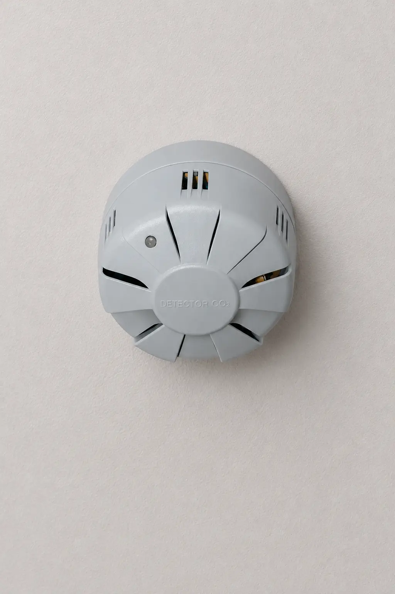
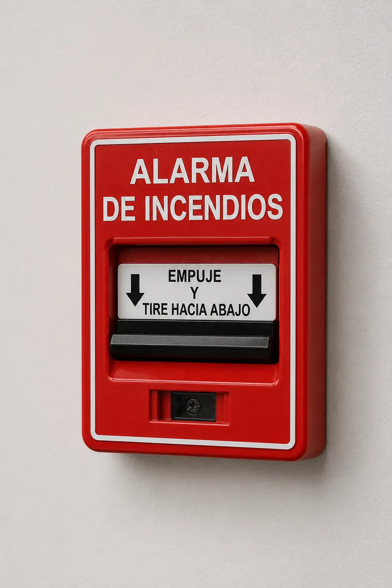
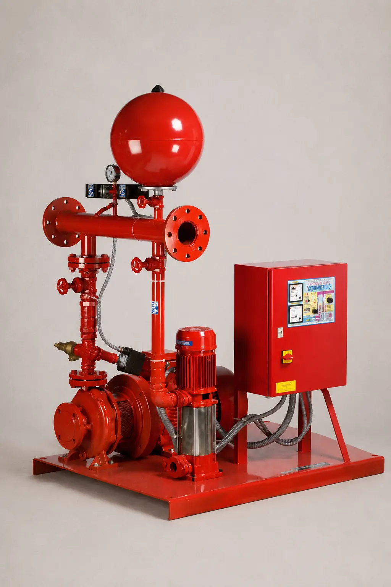
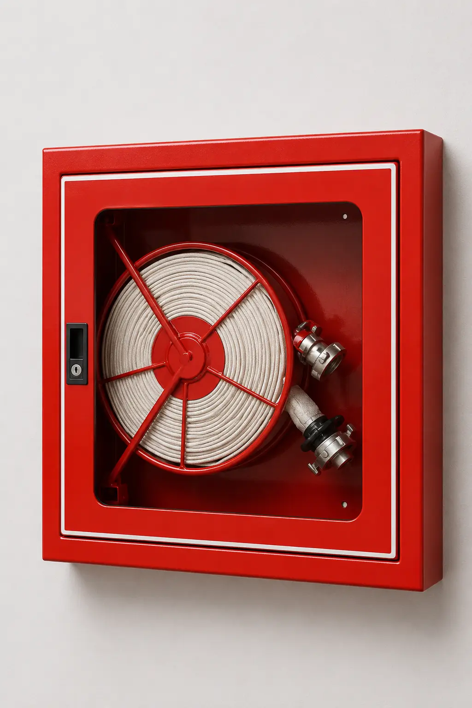
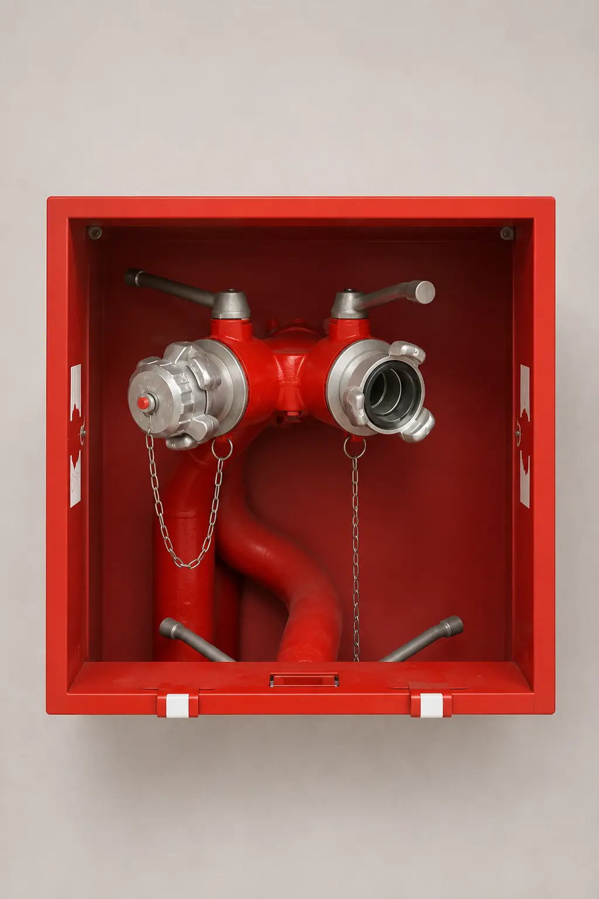
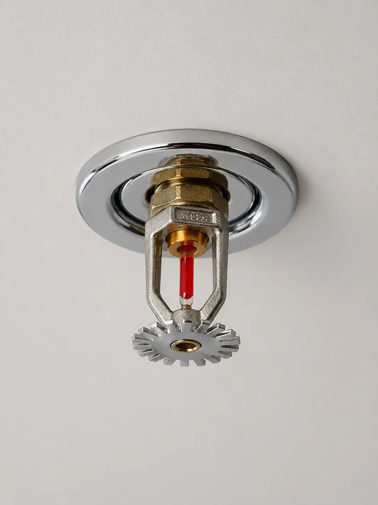
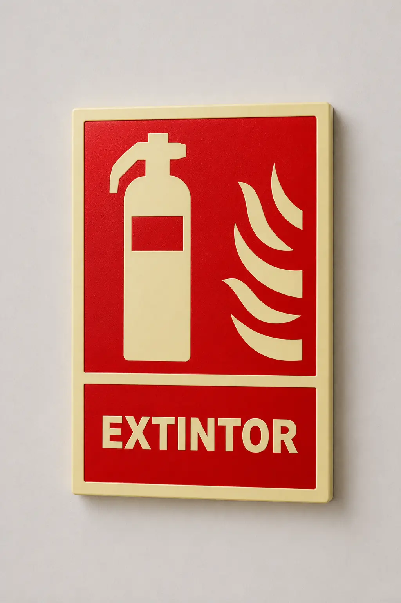
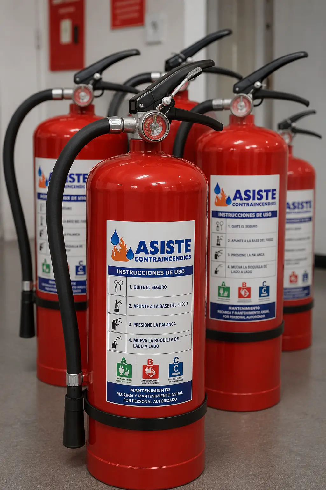

Soluciones Profesionales
Nuestros Servicios
Soluciones integrales de protección contra incendios adaptadas a cada necesidad.

¿Qué es un sistema de detección de CO?
La instalación de sistemas de detección de monóxido de carbono (CO) es vital en espacios confinados como garajes subterráneos, túneles o naves industriales. Estos sistemas monitorizan continuamente los niveles de gases tóxicos en el ambiente y activan de manera automática los sistemas de ventilación o extracción cuando las concentraciones superan los límites seguros, previniendo intoxicaciones y garantizando un aire respirable.
1. Funcionamiento del Sistema
El sistema consta de una red de detectores estratégicamente distribuidos que miden la concentración de gas en partes por millón (ppm). Esta información se envía a una central de control. Si los niveles alcanzan un primer umbral (por ejemplo, 50 ppm), la central activa una alarma preventiva o la ventilación a baja velocidad. Si los niveles siguen subiendo, se activa la extracción máxima para evacuar el gas rápidamente.
2. Componentes Principales
- Central de Control: Cerebro del sistema que procesa las mediciones de todos los sensores y gestiona la activación de reles.
- Sensores / Detectores de CO: Dispositivos electroquímicos que detectan la presencia del gas inodoro e incoloro.
- Paneles repetidores: Para la monitorización a distancia desde garitas de seguridad.
3. Mantenimiento Obligatorio
- Anual: Verificación de todos los detectores con gas patrón para comprobar su correcta lectura.
- Vida útil: Los sensores electroquímicos tienen una vida útil limitada (generalmente entre 4 y 5 años) y deben ser reemplazados al finalizar este periodo para asegurar su fiabilidad.

¿Qué es un sistema de detección y alarma?
Los sistemas de detección y alarma son la primera línea de defensa contra el fuego. Diseñados para identificar rápidamente la presencia de humo, calor o llamas, emiten señales acústicas y visuales que permiten la evacuación segura del edificio y la rápida intervención de los servicios de emergencia.
1. Incluye
- Centrales de detección
- Pulsadores
- Sirenas
2. Tipos de Sistemas
A. Sistemas Convencionales
Agrupan los detectores y pulsadores por zonas (ej. Planta 1, Garaje). En caso de alarma, la central indica en qué zona se ha producido el evento, pero no el detector exacto. Son ideales para locales pequeños o medianos.
B. Sistemas Analógicos (Direccionables)
Cada elemento de la instalación tiene una dirección única y se comunica individualmente con la central. Permiten saber exactamente qué detector o pulsador se ha activado (ej. "Detector Humo Despacho 3"). Son indispensables para grandes edificios, hoteles y hospitales.
3. Mantenimiento y Revisiones
- Trimestral: Comprobación de funcionamiento de la central, fuentes de alimentación y prueba visual.
- Anual: Prueba real de un porcentaje de detectores y pulsadores, limpieza de equipos y revisión acústica de las sirenas para garantizar que la señal llegue a todas las áreas necesarias.

¿Qué es el abastecimiento de agua contraincendios?
El sistema de abastecimiento de agua garantiza que toda la red contraincendios (BIEs, rociadores, hidrantes) disponga del caudal y la presión necesarios en caso de emergencia. Está compuesto por un depósito de reserva de agua y un grupo de bombeo específicamente diseñado para operar bajo las condiciones más exigentes.
1. Partes del Grupo de Bombeo (PCI)
- Bomba Jockey: Es una bomba pequeña encargada de mantener la presión constante en la red, compensando pequeñas fugas o variaciones de presión sin necesidad de arrancar las bombas principales.
- Bomba Principal Eléctrica: Entra en funcionamiento automáticamente cuando la demanda de agua es mayor de lo que la bomba jockey puede compensar (ej. apertura de una BIE o un rociador).
- Bomba Principal Diésel: Actúa como respaldo de seguridad. Si falla el suministro eléctrico, la bomba diésel arranca de manera autónoma para asegurar que el sistema no se quede sin presión durante un incendio.
2. El Depósito de Reserva
Para garantizar que siempre haya agua disponible, se requiere un depósito exclusivo para el sistema de incendios. El volumen del depósito (que puede ser de decenas de miles de litros) se calcula en función del riesgo del edificio y del tiempo de autonomía exigido por normativa (típicamente entre 60 y 90 minutos de flujo ininterrumpido a caudal máximo).
3. Mantenimiento Obligatorio
- Semanal / Mensual: Arranque manual y automático de las bombas para asegurar su correcto funcionamiento, comprobación de niveles de aceite y combustible en la bomba diésel.
- Anual: Revisión exhaustiva de válvulas, limpieza de filtros y comprobación de la curva de rendimiento de las bombas.

¿Qué son las BIEs?
Las Bocas de Incendio Equipadas (BIEs) son equipos de pared conectados de forma permanente a la red de abastecimiento de agua. Están pensadas para ser utilizadas por los ocupantes del edificio en las primeras fases de un incendio, proporcionando un chorro continuo de agua inagotable.
1. Tipos de BIEs
A. BIE de 25 mm
Utiliza una manguera semirrígida (que mantiene su forma circular aunque no tenga presión). Su principal ventaja es que puede ser utilizada por cualquier persona sin formación técnica y desenrollarse solo la cantidad de manguera necesaria. Es la más común en locales comerciales, colegios y oficinas.
B. BIE de 45 mm
Utiliza una manguera plana que debe extenderse en su totalidad antes de abrir la válvula de agua para evitar dobleces que corten el flujo. Proporciona un caudal mucho mayor, por lo que requiere personal formado (o bomberos) debido a la gran fuerza de retroceso que genera. Común en naves industriales y aparcamientos extensos.
2. Componentes de una BIE
- Armario: Contenedor metálico o de PVC, a menudo con cristal romplible o puerta con cerradura rápida.
- Carrete y Manguera: Soporte giratorio y conducto flexible (generalmente de 20 metros).
- Lanza-boquilla: Permite seleccionar el tipo de chorro (niebla, pleno) o cerrar el paso de agua desde la punta.
- Válvula y Manómetro: Llave de paso general y reloj medidor de la presión estática de la red.
3. Normativa y Mantenimiento
- Cada 3 meses: Accesibilidad y comprobación visual (manómetro, estado de la boquilla).
- Anual: Desenrollado total de la manguera y comprobación de funcionamiento bajo presión.
- Cada 5 años: Prueba hidrostática (retimbrado) de la manguera para garantizar que resiste la presión sin romperse (hasta un máximo de 20 años).

¿Qué son los hidrantes?
Los hidrantes son tomas de agua de gran caudal conectadas a la red pública o a un abastecimiento privado, situadas en el exterior de los edificios. Su principal función es proporcionar agua a los camiones de bomberos para facilitar las labores de extinción desde el exterior.
1. Tipos de Hidrantes
A. Hidrante de Columna Húmeda
Son los clásicos postes de color rojo que vemos en las aceras. Tienen agua en su interior de forma permanente hasta la altura de las válvulas de salida. Son más rápidos de utilizar, pero solo pueden instalarse en zonas donde no hay riesgo de que las temperaturas bajen a cero grados (riesgo de congelación).
B. Hidrante de Columna Seca
Tienen el mismo aspecto que los de columna húmeda, pero la válvula principal se encuentra bajo tierra (por debajo del nivel de congelación). Al abrir la válvula desde arriba, el agua sube por la columna. Están diseñados con un sistema de vaciado automático para que, tras su uso, la columna vuelva a quedar vacía.
C. Hidrante Bajo Rasante (Arqueta)
Se encuentran totalmente ocultos bajo una tapa metálica en el suelo de calles, aceras o polígonos. No obstaculizan el tráfico ni a los peatones. Para usarlos, los bomberos levantan la tapa y acoplan un accesorio especial (columna de prolongación).
2. Funciones Clave
- Abastecimiento de vehículos: Permiten rellenar las cisternas de los camiones de bomberos que se quedan sin agua rápidamente.
- Extinción directa: Mediante mangueras de gran diámetro acopladas al hidrante para fuegos en fachadas o exteriores.
3. Mantenimiento
- Trimestral / Semestral: Inspección visual, comprobación de accesibilidad y engrase de tapones.
- Anual: Apertura de las válvulas para medir caudales, presiones y garantizar que no haya obstrucciones ni fugas en el mecanismo interno.

¿Qué son las columnas secas?
La columna seca es una tubería vacía (sin agua) que recorre verticalmente un edificio y cuenta con tomas de conexión en cada planta. Es de uso exclusivo para los bomberos, quienes conectan su manguera en la fachada para inyectar agua presurizada desde el camión, evitando tener que subir mangueras por las escaleras.
1. Funcionamiento
Cuando ocurre un incendio en una planta alta, los bomberos conectan la motobomba de su camión a la toma de fachada (situada a nivel de calle). El camión inyecta agua a gran presión, llenando la tubería vacía del edificio. Otros bomberos, ya situados en la planta del incendio, abren la boca de salida de esa planta y conectan sus mangueras cortas, disponiendo de agua inmediata sin tener que arrastrar tramos de manguera por las escaleras, lo cual ahorra un tiempo crítico y reduce tropiezos.
2. Componentes de la Columna Seca
- Toma en Fachada (IPF): Caja en la vía pública con conexión siamesa y válvulas antirretorno, identificada con el letrero "Uso Exclusivo Bomberos".
- Red de Tubería de Acero Galvanizado: Sube de forma vertical a lo largo de las cajas de escalera del edificio (normalmente requerida en edificios de más de 24 metros de altura).
- Bocas de Salida en Plantas: Cajas ubicadas en los rellanos (normalmente en plantas pares) que cuentan con salidas siamesas protegidas con tapones.
- Llaves de Seccionamiento: Para aislar tramos de tubería en edificios muy altos si ocurre alguna rotura.
3. Pruebas y Mantenimiento
- Semestral: Comprobación visual de todas las tapas, cajas, señalización y estado de los cristales.
- Anual: Apertura de tapones, engrase de válvulas y comprobación del cierre.
- Cada 5 años: Prueba de presión hidrostática total, inyectando agua a presión en la tubería vacía para verificar que no existan poros, fisuras ni pérdida de estanqueidad.

¿Qué son los sistemas fijos de extinción?
Diseñados para sofocar o controlar incendios de manera automática en sus primeras fases. Estos sistemas se activan al detectar un aumento drástico de temperatura o la presencia de humo, protegiendo bienes de alto valor y áreas de riesgo especial.
1. Incluye
- Rociadores automáticos
- Sistemas automáticos de extinción de campanas de cocina
2. Detalle de Sistemas Comunes
A. Rociadores Automáticos (Sprinklers)
Consisten en una red de tuberías en el techo conectadas a la red de abastecimiento. Cada rociador cuenta con una ampolla de cristal que se rompe cuando la temperatura ambiente alcanza cierto nivel (usualmente 68ºC). Al romperse, se libera el agua. A diferencia de las películas, solo se activa el rociador que está directamente sobre el fuego, minimizando los daños por agua.
B. Extinción para Campanas de Cocina Industriales
Frecuentemente requeridos en restaurantes y hoteles. Utilizan un agente extintor químico a base de acetato de potasio que, al entrar en contacto con el aceite ardiendo, crea una capa jabonosa (saponificación) que ahoga el fuego y enfría rápidamente la superficie, impidiendo la re-ignición.
C. Sistemas de Extinción por Gas (CO₂, Novec, Inergen)
Ideales para CPDs (Centros de Procesamiento de Datos), cuadros eléctricos, archivos históricos y museos. En lugar de usar agua (que destruiría los equipos), descargan gas a alta presión que reduce el nivel de oxígeno o actúa inhibiendo la reacción química del fuego, sin dejar residuos ni humedad.
3. Mantenimiento y Verificación
- Rociadores: Revisiones anuales del puesto de control y limpieza de cabezales.
- Campanas de cocina: Revisión semestral y sustitución o recarga de los botellones del agente extintor.
- Sistemas por gas: Comprobación de peso o presión de las botellas anualmente y pruebas de estanqueidad de la sala (Door Fan Test).

¿Qué es la señalización fotoluminiscente?
La señalización de emergencia tiene como objetivo orientar a las personas hacia las vías de evacuación de manera rápida y segura. Al ser fotoluminiscente, absorbe luz ambiental y brilla en la oscuridad en caso de fallo eléctrico o densa presencia de humo.
1. Tipos de Señalización
A. Señalización de Evacuación (Verde y Blanca)
Incluye carteles con flechas direccionales, indicaciones de "SALIDA" o "SALIDA DE EMERGENCIA", y la señalización especial de escaleras y puertas. Su propósito es marcar una ruta continua e inequívoca hasta un lugar seguro en el exterior.
B. Señalización de Equipos de Extinción (Roja y Blanca)
Todo equipo de protección contra incendios debe estar debidamente señalizado. Esto incluye señales cuadradas o rectangulares para Extintores, BIEs y Pulsadores de Alarma. Garantizan que los equipos puedan localizarse instantáneamente, incluso a grandes distancias o con baja visibilidad.
C. Planos de Evacuación y "Usted está aquí"
Obligatorios en centros públicos, hoteles y hospitales. Muestran de forma esquemática la planta del edificio, las salidas principales y secundarias, y la ubicación del usuario, siguiendo la norma UNE 23035.
2. Vida Útil y Normativa
- Luminiscencia: Las señales Clase A son para lugares de pública concurrencia (brillan más tiempo e intensidad). Las señales Clase B son para el resto de usos.
- Mantenimiento (Anual): Limpieza de las señales y comprobación de su correcta ubicación y legibilidad.
- Caducidad: Las normativas actuales establecen una vida útil recomendada de 10 años para la señalización, momento en el cual deben sustituirse para asegurar que la pintura fotoluminiscente conserve sus propiedades intactas.

¿Qué es un extintor?
Un extintor es un aparato portátil para apagar fuegos o incendios de pequeña magnitud. Consiste en un recipiente a presión que contiene un agente extintor líquido, espumoso o en polvo, permitiendo proyectarlo sobre un fuego en su fase inicial para extinguirlo.
1. Clasificación de los extintores
A. Según su Movilidad
- Portátiles: transportados a mano, peso máx. 20 kg.
- Móviles: peso superior a 20 kg, disponen de ruedas.
- Fijos: accionamiento automático en instalación fija.
B. Según su Sistema de Presurización
- Presión permanente: cuerpo permanentemente presurizado.
- Presión propia: el agente extintor tiene suficiente presión (ej. CO₂).
- Presión incorporada: gas propelente (nitrógeno o aire).
- Presión no permanente o adosada: se presuriza al activar una válvula.
C. Según el Agente Extintor
- Agua: para fuegos sólidos (A). No usar con tensión eléctrica.
- Polvo químico seco: para fuegos B y C.
- Polvo químico polivalente: para fuegos A, B y C.
- Dióxido de carbono (CO₂): para fuegos A y B. Ideal para presencia eléctrica.
2. Partes del extintor
- Recipiente: contiene el agente y gas impulsor.
- Agente extintor: producto de extinción.
- Elementos de disparo: maneta, manguera, boquilla.
- Seguridad: pasador de seguridad y manómetro.
3. Elección y Clases de Fuego
| Clase | Combustible | Polvo ABC | CO₂ |
|---|---|---|---|
| A | Sólidos (madera, papel) | Muy adecuado | Aceptable |
| B | Líquidos inflamables | Muy adecuado | Adecuado |
| C | Gases inflamables | Muy adecuado | No |
| E | Equipos eléctricos | Adecuado (< 1000V) | Muy adecuado |
4. Utilización del extintor
- Comprobar el manómetro (debe estar en zona verde).
- Quitar el precinto y pasador de seguridad.
- Realizar un disparo de prueba.
- Situarse de espaldas al viento y aplicar a la base de las llamas.
5. Mantenimiento
- Cada 3 meses (Usuario): Accesibilidad, estado visual, presión (manómetro).
- Cada año (Profesional): Verificación exhaustiva de peso, presión y componentes.
- Cada 5 años (Profesional): Retimbrado (prueba de presión). Vida útil máxima: 20 años.